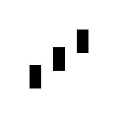

本地语音 AI
不用联网
做个语音助手
#1今日榜首
TypeScript

different-ai/openwork
开源AI编程
Claude Cowork 的开源替代品，基于 opencode 驱动
18693★
今日 +916
商业工具开源
免费使用
AI 编程
100m80m60m40m20m
#2今日涨星
Python

huggingface/speech-to-speech
本地语音助手
用开源模型搭建本地语音助手
8743★
今日 +627
本地运行
不用联网
数据不外传
#3今日涨星
TypeScript

pascalorg/editor
画3D建筑
创建并分享 3D 建筑项目
20096★
今日 +617
浏览器即开
免装软件
一键分享
| 00| 25| 50| 75| 99
#4今日涨星
Python

mvanhorn/last30days-skill
AI查热点
AI 代理技能，跨平台调研任意话题并综合出有依据的摘要
55523★
今日 +377
跨平台调研
AI 替你刷
秒出报告
效率工具速览
agavra/tuicr
终端审代码

microsoft/PowerToys
系统提效
这 6 个项目
你最想试哪个
openwork
speech-to-speech
editor
last30days
tuicr
PowerToys
关注 GitHub 星探，下期见